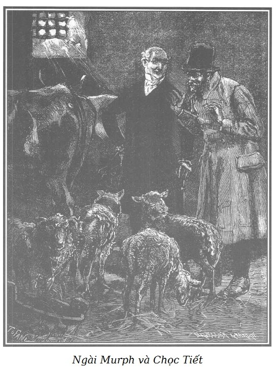

Một tháng đã trôi qua từ khi xảy ra những sự việc kể trên. Chúng tôi xin dẫn độc giả đến một thị trấn nhỏ ở đảo Adam, vị trí thật đẹp, trên bờ sông Oise, ven rừng.
Đối với tỉnh lẻ thì một sự việc tầm thường cũng rất dễ trở thành một sự kiện hệ trọng. Cho nên, buổi sáng hôm ấy, những kẻ ăn không ngồi rồi ở đảo Adam nhởn nhơ dạo bước trên quảng trường Nhà Thờ, cố chú ý để tìm hiểu xem khi nào thì người chủ mới tậu ngôi hàng bán thịt ở thị trấn của bà quả phụ Dumont nhường lại.
Người chủ mới này hẳn là giàu. Ông ta đã thuê quét vôi, trang hoàng choáng ngợp. Từ ba tuần nay, toán thợ làm việc suốt ngày đêm. Một bộ cửa lưới đồng rất đẹp và sáng bóng, chạy dài suốt mặt tiền quầy pha thịt, khi đóng vẫn để thông khí dễ dàng. Hai đầu lưới dựng những cột to đội trên đầu hai mẫu đầu bò tót to tướng, sừng vàng chói. Bộ cột này nâng cả phần mặt tiền nhà, sẵn sàng chờ treo tấm biển tên cửa hiệu.
Phần còn lại, gồm một tầng, quét vôi màu đá, cửa chớp sơn xám nhạt. Công việc trang trí đã xong, chỉ còn tấm biển là chưa đặt vào chỗ, khiến khách tò mò nóng lòng muốn biết tên người kế nghiệp bà góa.
Cuối cùng, thợ khiêng đến một tấm biển to và ai vô công rồi nghề đều có thể đọc những chữ vàng kẻ trên nền đen.
“Francœur, hàng bán thịt.”
Tính hiếu kỳ của dân đảo Adam chỉ được thỏa mãn một phần qua lượng thông tin vắn tắt ấy.
– Hầy! Cái ông Francœur là ai vậy? – Một người háo hức nhất chạy đi gặp anh thợ pha thịt để hỏi.
Anh này vốn vui vẻ và cởi mở, đang chăm chú bày biện mặt hàng cho mau xong. Được hỏi về ông chủ, ông Francœur, anh thợ trả lời rằng anh ta thật chưa biết gì lắm vì ông chủ mới tậu ngôi hàng qua thủ tục ủy quyền. Tuy vậy, anh ta quả quyết rằng ông chủ nhất định sẽ làm hết sức mình để xứng đáng với lòng tín nhiệm giao dịch của các vị khách hàng trên đảo Adam.
Mấy lời chào đón tán tụng rất thân tình ấy, kết hợp với cách trưng bày hoa mỹ của cửa hàng đã kéo lũ người tò mò ngả về phía cảm tình với ông Francœur. Lẻ tẻ đã có người hẹn mua bán lâu dài với anh thợ.
Ngôi nhà có một cổng to cho xe ba gác, thông ra phố Nhà Thờ. Cửa hàng vừa mở được hai tiếng đồng hồ thì một cỗ xe độc mã bện bằng cành liễu mới toanh thắng ngựa nòi vùng Percheron to khỏe thẳng dong vào sân. Hai người từ trong xe bước ra, một là Murph, thương tích đã lành nhưng nước da còn xanh, người thứ hai là Chọc Tiết.
Nói ra thì hơi nhàm nhưng ta phải nhận ra rằng uy lực của trang phục mạnh đến mức vị khách quen thuộc của khu Nội Thành trở nên rất khó nhận ra trong bộ quần áo chững chạc, diện mạo của y cũng thay đổi theo. Cùng với mớ quần áo tả tơi, y đã trút bỏ hết vẻ hoang dã, hung dữ và ngạo mạn. Cứ nhìn bộ điệu đi đứng, hai tay đút túi áo redingote vải giả da màu hạt dẻ, chiếc cằm nhẵn nhụi trên dải cà vạt thêu trắng tinh, ai mà lại không bảo đó là một nhà tư sản hiền lành nhất đời.
Murph ngoắc dây cương ngựa vào vòng sắt đóng trên tường, ra hiệu cho Chọc Tiết theo mình, rồi cả hai cùng tiến vào một gian phòng đẹp nhưng thấp, đồ đạc toàn bằng gỗ hồ đào; đó là nhà trong của cửa hàng. Hai cửa sổ trổ ra sân; con ngựa giậm chân bực bội. Murph tự nhiên như ở nhà mình, mở tủ lấy một chai rượu mạnh và một chiếc cốc đưa cho Chọc Tiết.
– Sáng nay lạnh thật. Làm một cốc, anh bạn.
– Thưa ông Murph, xin ông đừng chấp, tôi không uống đâu ạ.
– Anh từ chối à?
– Vâng, tôi thấy mãn nguyện vì một niềm vui sướng sưởi ấm lòng tôi, nói mãn nguyện là thế đấy ạ!
– Nghĩa là sao?
– Hôm qua, khi ông đến tìm tôi ở bến cảng Saint-Nicolas tôi đang cật lực bốc dỡ hàng cho đỡ lạnh; từ đêm mà ông da đen tóc trắng làm mù mắt lão Thầy Đồ, tôi chưa kịp gặp lại ông. Thật đáng đời cho lão! Nhưng dù sao, mẹ kiếp, điều đó khiến tôi mủi lòng. Còn ông Rodolphe nữa! Thật là một con người, thế nào ông nhỉ? Vẫn vẻ hồn nhiên đôn hậu khiến tôi sợ, ngay lúc đó.
– Phải! Phải! Rồi sao kia?
– Ông đã nói với tôi ở bến bốc dỡ: “Chào anh Chọc Tiết”, tôi đáp: “Kính chào ông Murph, ông đã bình phục rồi hả? Hay lắm! Lạy Trời! Thế còn ông Rodolphe?” “Ông ấy phải vắng mặt mấy ngày sau vụ xảy ra ở phố Gái Góa và ông ấy đã quên anh rồi, anh bạn ạ.” Tôi bèn trả lời ông rằng: “Ông Murph ạ, nếu ông Rodolphe quên tôi, thưa, thật ra điều đó khiến tôi buồn lắm.”
– Ý tôi muốn nói là ông ấy quên hậu thưởng cho anh để đền ơn cho anh kia, nhưng trong thâm tâm ông ấy vẫn nhớ đấy!
– Thưa ông Murph, những lời lẽ vừa rồi đã làm tôi mát lòng. Lạy Trời! Tôi không bao giờ quên được. Đức ông đã coi tôi là một con người còn giữ được lương tâm và danh dự. Thế là quá đủ với tôi!
– Nhưng khốn nỗi, Đức ông ra đi không truyền lệnh gì về anh cả. Còn tôi thì tôi chẳng có gì ngoài những thứ mà Đức ông đã ban cho. Tôi không thể đền ơn trả nghĩa theo ý tôi muốn, cho xứng đáng với anh.
– Ông Murph, đâu dám, đâu dám! Ông nói đùa rồi!
– Nhưng vì sao anh không trở lại đường Gái Góa sau đêm nguy nan ấy? Có thể nào Đức ông lại ra đi mà không nghĩ đến anh?
– Có thể chứ! Ông Rodolphe không gọi tôi đến. Tôi tưởng rằng Đức ông lúc đó không cần đến tôi nữa!
– Nhưng ít nhất anh phải nghĩ rằng Đức ông vẫn cần gặp anh để tỏ lòng biết ơn anh chứ!
– Thì chính ông đã cho tôi biết là Đức ông đã không hề bỏ quên tôi, ông Murph ạ!
– Được! Đừng nói đến điều đó nữa. Có điều là tôi đã tốn rất nhiều công sức đi tìm anh. Anh không trở lại nhà mụ Ponisse nữa chứ?
– Không ạ.
– Tại sao vậy?
– Theo ý riêng tôi… chuyện vớ vẩn ấy mà!
– Nhưng thôi, tôi nói nốt câu chuyện nhé!
– Về chuyện gì ạ, thưa ông Murph?
– Anh vừa bảo tôi rằng: “Tôi lấy làm mãn nguyện được gặp lại ông”, và còn hơn thế, thật mãn nguyện… có thể…
– À, tôi hiểu ra rồi đấy, ông Murph ạ. Hôm qua khi tìm gặp tôi trên bè củi, ông bảo tôi rằng: “Anh bạn, tôi không giàu nhưng tôi có thể tìm giúp anh một chỗ làm đỡ khó nhọc hơn ở bến bốc vác đây, công nhật là bốn franc.” Ối chà, muôn năm Hiến chương! Hiến chương muôn năm! Tôi khó mà tin nổi. Người ta sẽ trả công cho tôi ngang với lương của một hạ sĩ quan, của một thầy quản! Thế là tôi mới trả lời: “Cái đó hợp với tôi lắm, ông Murph ạ.” Rồi ông bảo: “Không thể để cho anh ăn mặc như một kẻ ăn mày được. Áo xống như thế thì sẽ khiến các ông chủ hiệu hoảng sợ khi tôi dẫn anh đến xin việc.” Tôi đáp: “Thật tình tôi chẳng có cách gì ăn mặc cho khác được.” Ông lại bảo: “Đến phố chợ Temple*!” Thế là tôi theo ông đến chọn những gì sang nhất ở cửa hàng của mụ Hubart. Ông ứng cho tôi một số tiền và không quá mười lăm phút sau, tôi đã bảnh chọe như một ông chủ hiệu hay một ông nha sĩ. Ông hẹn gặp tôi, tảng sáng nay ở phố Saint-Denis! Ông đã đi xe độc mã đến và… rồi thế này đây.
Chợ trời ở Paris thời đó.
– Thế thì có gì đâu mà anh phải phàn nàn?
– Có, có, ăn mặc như thế này, ông Murph ạ, đến hỏng mất! Đến lúc tôi phải trở lại nguyên hình với bộ quần áo rách như xơ mướp trước đây thì tai hại ghê. Với lại, kiếm được những bốn franc một ngày so với trước kia chỉ có hai, đùng một cái, lộc tốt như thế e không lâu dài được. Thực tình tôi vẫn cứ muốn suốt đời nằm trên ổ rơm tồi tệ ở xó buồng hơn là ngự đàng hoàng năm, sáu đêm trên giường nệm. Tính tôi nó thế!
– Cái đó không phải là không có lý, nhưng được ngủ giường vẫn hơn chứ!
– Rõ ràng là vậy. Có đủ cơm ăn no nê vẫn hơn là chết đói. Ái chà! Cửa hàng bán thịt thật đấy! – Chọc Tiết nói, tai vểnh lên lắng nghe tiếng dao pha thịt của anh phụ mổ và thấp thoáng thấy nhiều quầy thịt bò sau bức màn che.
– Đúng là cửa hàng thịt, anh bạn ạ, của người bạn tôi. Ngựa của tôi đang nghỉ cho lại sức, anh có muốn đảo qua xem một tí không?
– Vâng, đi chứ ạ. Cái đó nhắc nhở thời thanh niên của tôi, không phải chỉ có nhớ rằng xưa kia tôi đã làm ở một lò mổ, lò Montfaucon lúc nào cũng có một đàn bị thịt. Thật buồn cười. Nếu tôi đủ điều kiện thì đó là một nghề mà tôi có lẽ cũng thích, nghề hàng thịt. Cưỡi một con ngựa tầm tiểu, đến chợ gia súc, trở về nhà ngồi cạnh bếp lò, tha hồ sưởi ấm, nếu bị ướt thì hong quần áo cho khô, ngắm nhìn bà xã làm việc nội trợ, một bà mẹ béo tốt phương phi, tươi tỉnh của cả đàn con, đứa nào cũng muốn lục lọi túi vải của bố, xem bố chúng đem về những thứ quà gì. Và rồi sáng sáng ra lò mổ, nắm lấy đôi sừng con bò, nhất là khi có con bò mộng dữ tợn thì, lạy trời, đem xỏ mũi cột chặt ngay vào vòng sắt, đập đầu và chọc tiết ngay tắp lự, ngả ra, pha ra, pha lạng thịt bạc nhạc ra. Trời ơi! Tham vọng của tôi là thế, khác nào ước muốn của Sơn Ca là nhai kẹo mạch nha khi còn bé tí… À, về chuyện con bé khốn khổ này, thì thưa ông Murph, khi không thấy nó trở lại nhà mụ Ponisse nữa, tôi cứ tin chắc ông Rodolphe đã cứu nó rồi, thật là một việc phúc đức quá! Tội nghiệp con bé, nó có muốn làm bậy đâu! Mà nó còn trẻ quá! Sau này chỉ sợ không khéo mà quen thói thôi! Ông Rodolphe đã xử sự đúng quá.
– Tôi cũng nghĩ như anh. Nhưng, nào, ta đi thăm cửa hiệu một tí. Để cho ngựa nó thở.

.Chọc Tiết và Murph đi vào cửa hiệu, rồi ra chuồng gia súc nhốt ba con bò tuyệt đẹp, vài chục con cừu; tiếp theo là tàu ngựa, là lán xe, lò mổ, vựa ngũ cốc, những gian nhà phụ gìn giữ cẩn thận, sạch sẽ báo hiệu trật tự và dư dật. Sau khi đã quan sát, trừ tầng nhà trên, Murph nói:
– Phải công nhận rằng ông bạn của tôi là một anh chàng sung sướng. Cả cơ ngơi này thuộc về anh ta, chưa kể một nghìn đồng tiền vàng xúng xính để kinh doanh vào tuổi ba mươi tám. Tuổi ấy khỏe như trâu, không hề biết đau ốm gì, lại yêu thích nghề mình, còn chú thợ phụ mổ, giỏi giang, ta vừa mới gặp ở tầng dưới thì sẽ thay anh ta làm việc thật thà, khôn khéo, một khi anh ta đi chợ tậu gia súc. Như thế thì sung sướng quá đi chứ ạ?
– Ồ vâng, thưa ông Murph, nhưng biết thế nào được, có kẻ sướng thì có kẻ khổ; như tôi kiếm được công nhật bốn franc nhưng lại có kẻ chỉ được nửa số đó hay còn kém hơn thế…
– Anh có muốn thăm phần còn lại của ngôi nhà này không?
– Sẵn sàng, thưa ông Murph.
– Chính ông chủ định giao việc cho anh đang ngồi trên đó.
– Ông chủ định thuê tôi làm công ấy à?
– Phải.
– Kỳ cục thật! Sao ông không bảo tôi trước?
– Tôi sẽ cho anh biết rõ sau.
– Hãy gượm tí đã. – Chọc Tiết nói, vẻ buồn buồn và bối rối, níu tay Murph lại. – Hãy nghe tôi điều này, rằng ông Rodolphe hẳn là chưa cho ông hay… điều mà tôi không muốn giấu ông chủ thuê tôi vì nếu điều đó khiến ông ta ngán ngẩm, lo ngại thì thà rằng để nó xảy ra ngay tức khắc còn hơn là để về sau.
– Ý anh định nói gì?
– Rằng…
– Sao?
– Rằng tôi là một tên tù được phóng thích, là một tù khổ sai. – Chọc Tiết nói giọng khàn khàn.
– Ái chà chà!
– Nhưng tôi chưa từng làm hại ai. – Chọc Tiết kêu lên. – Tôi sẵn sàng chịu chết đói chứ không thèm ăn cắp. Song tôi đã làm một việc xấu xa hơn ăn cắp là tôi đã giết người trong một cơn giận dữ. – Chọc Tiết hạ giọng, lặng đi một lát rồi nói thêm. – Đã hết đâu! Các ông tư sản không bao giờ chịu thuê một tên tù khổ sai, họ có lý của họ. Chuyện làm ăn đâu phải chuyện chơi.Đây không phải là chỗ để tuyên dương những cô gái đức hạnh. Chính điều đó đã ngăn cản tôi không tìm được công ăn việc làm ngoài việc bốc dỡ bè củi ở bến cảng, bởi rằng khi đến xin việc làm tôi luôn luôn nói thẳng ra tôi là thế này, tôi là thế nọ, đấy, các ngài có ưng thì thuê, không ưng thì thôi. Thà bị họ chối phăng ngay còn hơn là bị phát giác về sau. Thế có nghĩa là tôi sẽ nói toạc móng heo với nhà tư sản chủ hiệu, ông biết rõ ông ta, biết rằng ông ta sẽ từ chối tôi thì ông nên nói ngay cho tôi rõ, tránh cho tôi điều ấy và tôi xin quay ra ngay.
Murph nói:
– Anh cứ việc vào, cứ vào!
Chọc Tiết đi theo Murph leo thang gác. Một cánh cửa rộng mở và cả hai cùng đứng trước Rodolphe.
– Ông Murph thân mến ạ! Ông để mặc hai chúng tôi nhé! – Rodolphe nói.